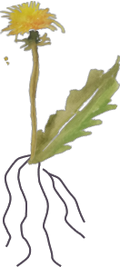

Hvad er
Rod-årsagen
Holistisk healing fokuserer på personen som helhed. Vi graver dybt og finder roden til problemet i stedet for kun at behandle symptomerne på en sygdom, en patient har. I stedet for at se på toppen af isbjerget fokuserer vi på det, der er under overfladen.

Hvad er
Holistisk tilgang - mennesket som helhed
Vi starter processen med at se på helheden i dig og dit liv. Der skal tages højde for alle faktorer, da enhver variabel er vigtig for vores detektivarbejde. Forestil mig som Sherlock Holmes, der leder efter skjulte spor for at løse det store mordmysterium om dit helbred!
